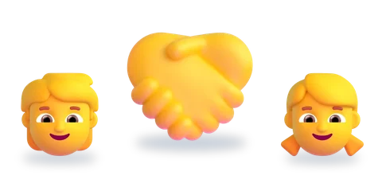
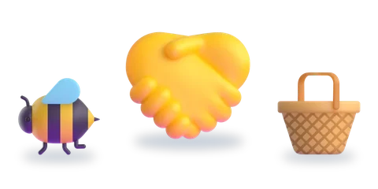
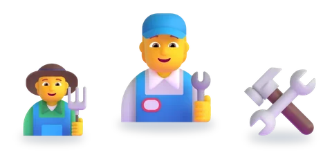
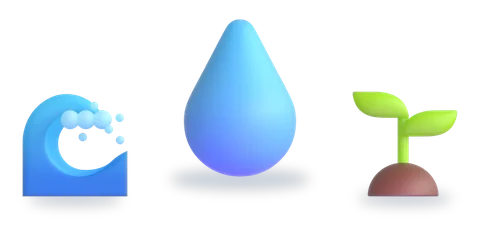
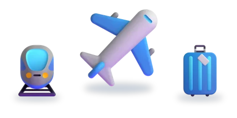

المستوى الثالث
ست وحدات، لكلّ وحدة خمسة أسابيع
اختر الوحدة، ثمّ الدرس.

الوحدة 1عالم الأصدقاء6 دروس
الوحدة 2الحياة التعاونية6 دروس الوحدة 3الوقاية من الأخطار5 دروس
الوحدة 3الوقاية من الأخطار5 دروس
الوحدة 4الحرف والمهن والابتكار5 دروس
الوحدة 5الماء والحياة5 دروس
الوحدة 6الرحلات والأسفار4 دروس
الرسوم: Twemoji (CC-BY 4.0) وFluent Emoji من Microsoft (MIT). الأصوات: صوت عربي اصطناعي.